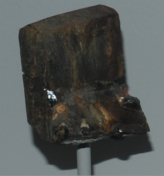

|

| (Y,Ca,Fe,Th)(Ti,Nb)2(O,OH)6
This sample of aeschynite is displayed in the Smithsonian Museum of Natural History. Aeschynite contains yttrium, thorium, titanium, and niobium along with iron and calcium. It has the composition (Y,Ca,Fe,Th)(Ti,Nb)2(O,OH)6. This sample is about 3x4.5 cm and it is from Ivelanc, Setesdal, Norway .
|